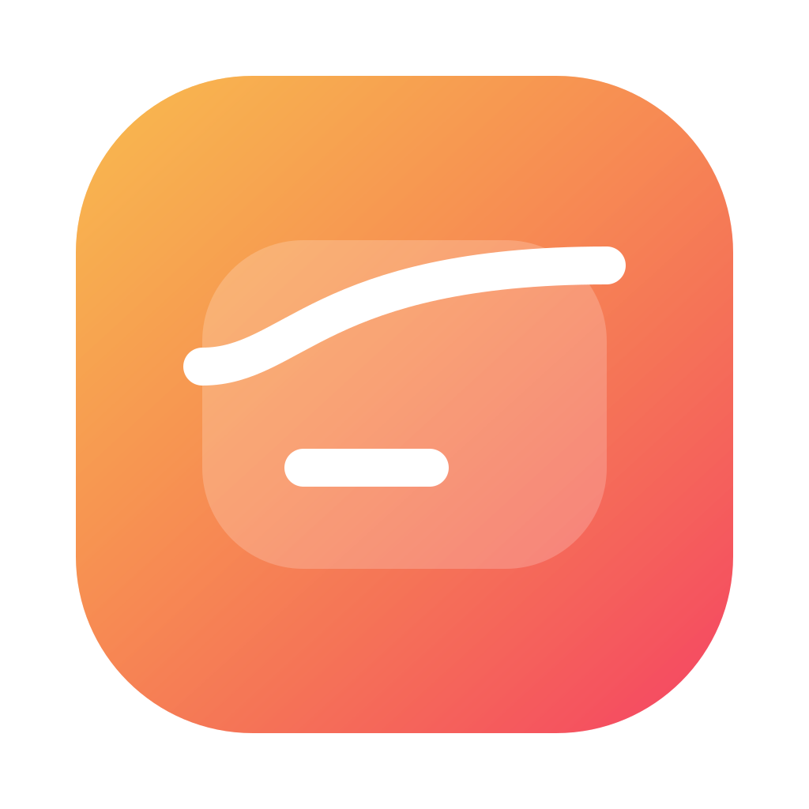
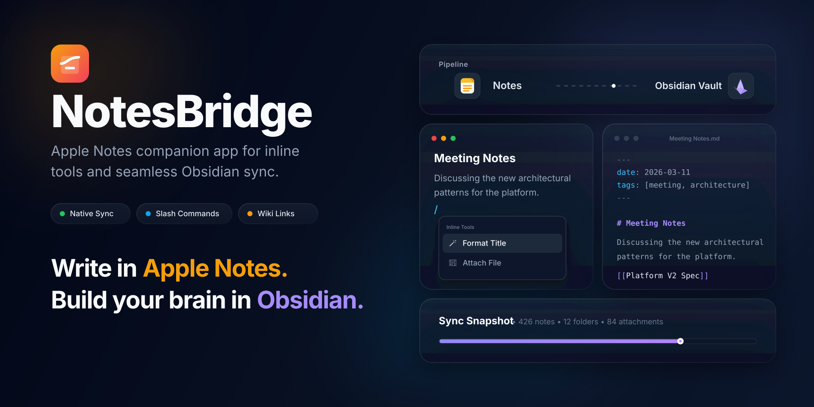

Inline editing
Apple Notes, with the missing shortcuts back.
Project kickoff notes
Review API scope and launch plan

NotesBridgeOpen-source macOS companion for Apple Notes
NotesBridge runs as a menu bar app, adds inline editing tools on top of Apple Notes, and syncs notes into local folders you can keep, search, version, and hand to AI agents.
Project kickoff notes
Review API scope and launch plan
---
title: Project kickoff notes
tags: [meeting, launch]
---
# Project kickoff notes
Review API scope and launch plan.
[[Launch Checklist]]Why it exists
Apple Notes is excellent for quick capture, phone-first editing, and notes shared with family or teammates. But when the long-term version of your notes needs to be searchable, scriptable, versioned, and ready for AI workflows, local Markdown still wins.
NotesBridge is built for people who want both: keep writing in Apple Notes, then turn that note graph into a local-first workspace without throwing away folders, attachments, front matter, or internal links.
Project snapshot

What it does today
Workflow
Current constraints
Q&A
No. Apple Notes does not expose a public plugin or extension API, so NotesBridge runs as a separate macOS companion app.
Not today. The current design is intentionally one-way: Apple Notes -> local Markdown folders.
The native export path is weak for ongoing workflows. NotesBridge is built around repeated sync, folder preservation, attachment export, and keeping the output useful for local-first tooling.
Yes. Shared Apple Notes are part of the intended workflow. The goal is to turn that shared input into a Markdown workspace that stays local and easier to process afterward.
The current export keeps folder structure, native attachments, front matter metadata, and internal links. That is the core product shape.